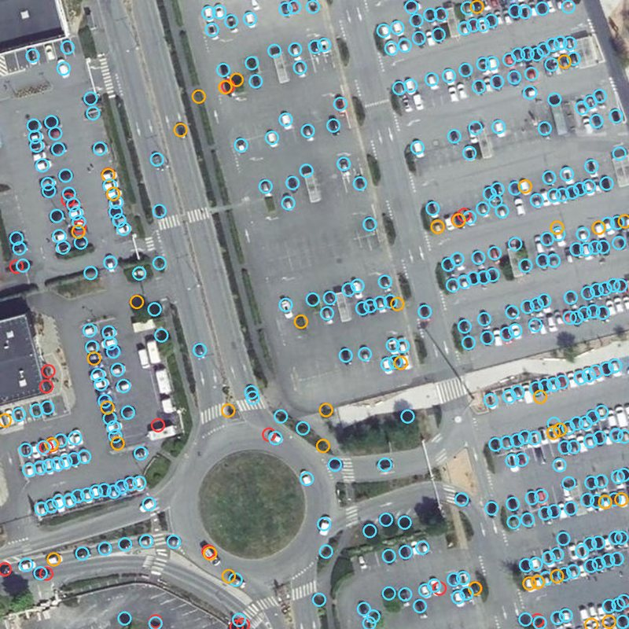

Tap or hover a street or car park for its numbers. Streets are coloured by estimated occupancy; blue dots are the cars the model found on streets and car parks. Capacity counts every tagged kerb, driveways included, so occupancy is a lower bound.
We counted the cars parked on the streets and public car parks of Wazemmes (about 1 km²) on three IGN photos, turned the count into an occupancy rate using the parking spaces mapped in OpenStreetMap, and corrected it for the model's measured errors and for cars hidden under trees.
Load an aerial photo and press Count. The AI finds the cars in your browser (nothing is uploaded anywhere), spots the rows of parked cars by itself, and counts the car-sized gaps in those rows as free spaces, corrected for the cars it misses. To include a kerb or car park with no car on it at all, mark it yourself first. The Wazemmes samples come with their OpenStreetMap parking already drawn.
The page downloads the IGN aerial photo of your area (Géoplateforme, free) and the parking mapped in OpenStreetMap (Overpass API, or the main OpenStreetMap server when Overpass is busy), then counts below. This needs the page to be opened from our GitHub site: claude.ai pages may not download from other websites.
Results appear here.
Drawing: pick a tool, click along the parked cars (or around the car park), then press Finish or double-click. A row counts cars within 3 m of your line; Wazemmes street lines are centre lines and count 7 m each side. Metres per pixel: on geoportail.gouv.fr, measure a known distance with the ruler and divide by its length in pixels; the page warns you if the car sizes do not fit.
What it cannot do: tell a parked car from one waiting at a light, see cars in underground or multi-storey car parks, or know which spaces are reserved (deliveries, disabled drivers, residents). It counts what one photo shows at one moment.
Our first prototype counted cars in the Auchan Englos car parks. The same model, with the same cut-off (0.25) and the same scoring rule, finds 91% of the cars there but only 64% on the Wazemmes streets. The two squares below show why: blue rings are cars found, red rings cars missed, orange rings false marks.


| Same model, cut-off 0.25, whole picture | Cars hand-labelled | Real-car share of marks | Cars found |
|---|---|---|---|
| Englos retail car parks (4 squares, 2018 and 2025) | 1,181 | 81% | 91% |
| Wazemmes city streets (6 squares) | 432 | 77% | 64% |
Four- and five-storey buildings throw their shadow across one side of the street, and in an aerial photo they lean over the kerb. Cars in that strip are dark on dark, or partly hidden: many of the red rings sit there.
On a street, cars are parked bumper to bumper along the kerb with no painted bays between them, so neighbours merge. Street trees cover 11% of the district and up to 44% of some streets.
Skylights, chimneys, vents and small sheds are the size of a car from 20 cm per pixel. A car park is open asphalt; a city block is roofs, so false marks pile up there. Keeping only marks on mapped streets and car parks lifts the real-car share from 65% to 90% at the 0.10 cut-off we use.
Why this matters: a count from a retail car park would overstate how well the method works in a city. That is why we measured the errors on the streets themselves and correct every estimate for them.